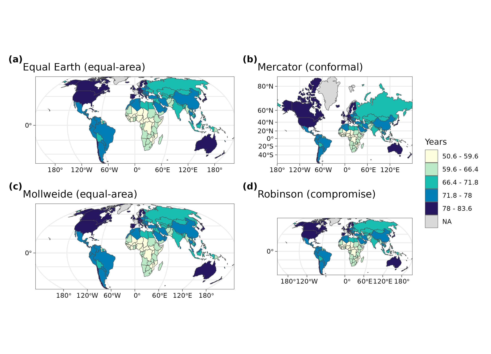
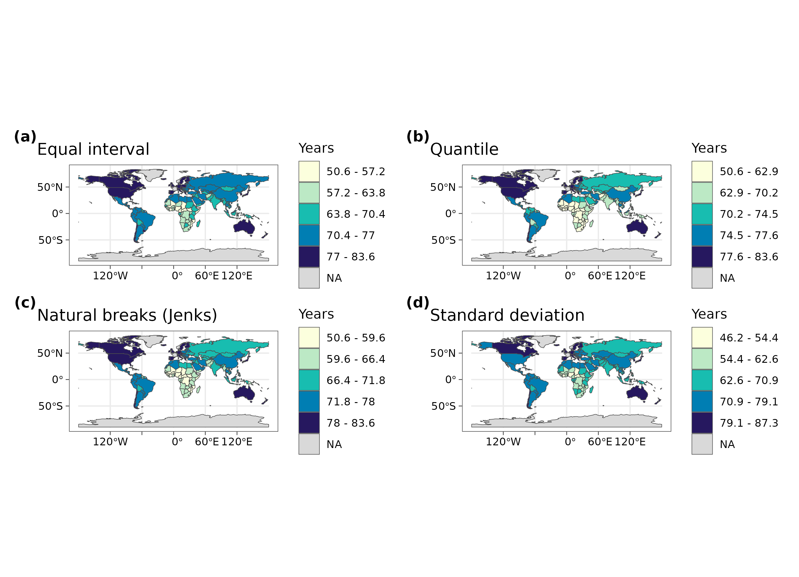
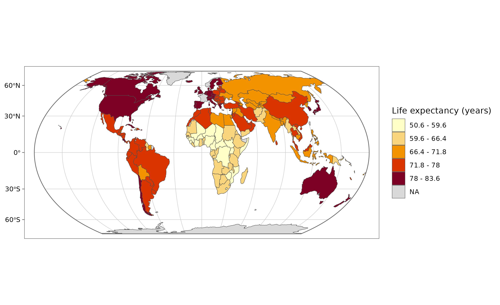

2. Cartography concepts: projections, classes and colour
guide-02-cartography.RmdA map is a model of the world, not a picture of it. Three decisions change what readers conclude from a thematic map: the projection (which distortions you accept), the classification (how numbers are grouped into colours) and the colour scheme (what the colours imply). This chapter explains the theory behind each, shows how tidymapr chooses, and how to justify the choice in a methods section.
library(tidymapr)
library(dplyr)
world <- sf::st_read(system.file("shapes/world.gpkg", package = "spData"), quiet = TRUE)The data are life expectancy at birth (years) for 177 countries, from the spData package.
1. Coordinate reference systems and projections
The concept
Positions on the Earth are angles (longitude and latitude) on a curved surface. A coordinate reference system (CRS) says how those numbers relate to real places: the datum (the model of the Earth’s shape, e.g. WGS84) and, for flat maps, the projection (the mathematical rule that flattens the curved surface onto a plane).
Flattening a sphere always distorts something. Gauss’s Theorema Egregium (1827) proves that no flat map can keep both areas and angles correct everywhere. Each projection chooses what to keep:
| Property kept | Name | Use it for | Examples |
|---|---|---|---|
| Area | Equal-area | Any map of densities, rates or amounts per area; choropleths | Equal Earth, Mollweide, Lambert azimuthal equal-area (LAEA), Albers |
| Angles and local shapes | Conformal | Navigation, web tiles, small study areas | Mercator, UTM, Lambert conformal conic |
| Distances from one point | Equidistant | Ranges from a site or a city | Azimuthal equidistant |
| A compromise | None exactly | General world reference maps | Robinson, Winkel Tripel |
Mercator is conformal, so it exaggerates areas towards the poles: Greenland looks as large as Africa, which is 14 times bigger. On a choropleth this inflates the visual weight of high-latitude countries, so use an equal-area projection whenever colour represents a quantity.
The same data in four projections
# Antarctica is left out: Mercator cannot show the poles at all
no_antarctica <- world[world$continent != "Antarctica", ]
p <- function(proj, label) {
plot_choropleth(no_antarctica, lifeExp, n = 5, style = "jenks", legend_title = "Years") +
coord_projection(proj) +
ggplot2::labs(title = label)
}
geo_panels(
p("equal_earth", "Equal Earth (equal-area)"),
p("mercator", "Mercator (conformal)"),
p("mollweide", "Mollweide (equal-area)"),
p("robinson", "Robinson (compromise)"),
ncol = 2, guides = "collect"
)
How to read it. The colours are identical in all four panels; only the geometry changes. Compare Russia, Canada and Greenland with Africa: in Mercator they dominate the map, in the equal-area projections they take their true share of the page.
How tidymapr chooses (geo_crs(),
geo_automap()):
| Extent of your data | Projection chosen | Why |
|---|---|---|
| The whole world | Equal Earth | Equal-area, with a natural look (Šavrič et al. 2019) |
| A continent or large region | Lambert azimuthal equal-area, centred on the data | Equal-area, least distortion near the centre |
| A study area (a few degrees) | Local UTM zone | Conformal and nearly equal-area at this scale; metres for scale bars |
| Raster tiles or interpolated surfaces | Longitude-latitude | Avoids resampling the grid |
You can always override it: geo_map(crs = "laea"),
crs = 32755 (an EPSG code) or
+ coord_projection("mollweide").
2. Classifying numbers into map classes
The concept
A choropleth shows numbers as colours. Readers can tell apart only about five to seven shades of one hue, so values are grouped into classes. How the class breaks are drawn changes the map’s message. The standard methods:
| Style | Rule | Good for | Risk |
|---|---|---|---|
"equal" |
Equal-width intervals over the range | Familiar units (e.g. 0-10 °C, 10-20 °C) | One outlier squeezes all other values into one class |
"quantile" |
Equal numbers of features per class | Ranking; showing relative position | Very different values can share a class; similar values split |
"jenks" |
Natural breaks: minimise the variance within classes (Fisher 1958; Jenks 1967) | Clustered or skewed data; the general default | Breaks are data-specific, so two maps are not directly comparable |
"pretty" |
Rounded breaks | Readable legends | Classes may be uneven |
"sd" |
Mean ± whole standard deviations | Showing departure from average | Needs a roughly symmetric distribution |
The goodness of variance fit (GVF) measures how well classes describe the data: GVF = 1 − (sum of squared deviations from class means) / (sum of squared deviations from the overall mean). GVF = 1 means classes explain all the variation; values above about 0.8 are good.
The same data, four classifications
styles <- c(equal = "Equal interval", quantile = "Quantile", jenks = "Natural breaks (Jenks)", sd = "Standard deviation")
maps <- lapply(names(styles), function(s) {
plot_choropleth(world, lifeExp, n = 5, style = s, legend_title = "Years") +
ggplot2::labs(title = styles[[s]])
})
geo_panels(maps, ncol = 2, guides = "keep")
gvf <- lapply(names(styles), function(s) {
cl <- attr(geo_classify(world, lifeExp, n = 5, style = s), "classification")
tibble(
style = styles[[s]],
breaks = paste(round(cl$breaks, 1), collapse = ", "),
countries_per_class = paste(cl$counts, collapse = " / "),
GVF = round(cl$gvf, 3)
)
})
knitr::kable(bind_rows(gvf), caption = "Class breaks, class sizes and goodness of variance fit for life expectancy (5 classes).")| style | breaks | countries_per_class | GVF |
|---|---|---|---|
| Equal interval | 50.6, 57.2, 63.8, 70.4, 77, 83.6 | 15 / 21 / 31 / 61 / 39 | 0.943 |
| Quantile | 50.6, 62.9, 70.2, 74.5, 77.6, 83.6 | 34 / 33 / 33 / 33 / 34 | 0.933 |
| Natural breaks (Jenks) | 50.6, 59.6, 66.4, 71.8, 78, 83.6 | 22 / 30 / 31 / 53 / 31 | 0.955 |
| Standard deviation | 46.2, 54.4, 62.6, 70.9, 79.1, 87.3 | 6 / 25 / 40 / 67 / 29 | 0.937 |
How to interpret this table. Natural breaks have the highest GVF: they follow the gaps in the data. Quantiles put roughly the same number of countries in each class, so the darkest class always covers a fifth of the map whatever the values. Equal intervals and standard deviations follow the scale of the numbers, so they are easy to explain but leave some classes almost empty.
How tidymapr chooses. geo_automap()
looks at the shape of the distribution: equal intervals when it is
roughly symmetric, natural breaks when it is skewed, quantiles when it
is heavy-tailed; five classes for 30 or more features, fewer for small
samples. It never uses a continuous colour ramp for polygons, because
readers cannot judge exact values from a continuous ramp.
3. Which symbol for which data
Every map layer is points, lines, areas or a continuous surface, and the right visual variable depends on whether the data are categories, ordered classes or quantities (Bertin 1967; MacEachren 1994; Slocum et al. 2009):
| Geometry | Categories (nominal) | Ordered classes | Quantities |
|---|---|---|---|
| Points (sites, records) | hue, symbol shape | classed lightness, or size | size (proportional symbols, area scaled to the value) |
| Lines (rivers, roads, transects) | hue, line type | classed lightness, width | width |
| Areas (polygons) | hue, pattern | classed choropleth | classed choropleth of a rate or density (never a raw count: use proportional symbols for counts) |
| Continuous surfaces (rasters: elevation, temperature, suitability) | classed hue | classed sequential ramp | continuous sequential or diverging ramp with a colour bar |
Hue and shape carry no order, so they are for categories only. A
continuous colour bar belongs to a continuous surface, not to discrete
points. tidymapr follows these rules: map_points(),
plot_sites() and plot_topo() show a numeric
colour variable as ordered classes with legend keys,
plot_geo() shows a numeric value at points as proportional
symbols, choropleths are classed (section 2), and rasters use a
continuous perceptually uniform ramp.
Whether a variable is a category or a quantity depends on the question. Elevation is a quantity on a terrain raster, but a category when sites are a few elevation bands; species are categories (hue or shape) when their records are mapped together.
4. Colour schemes
| Scheme | Shape | Use for | tidymapr palettes |
|---|---|---|---|
| Sequential | Light to dark, one or two hues | Amounts from low to high (density, richness, elevation) |
"YlOrRd", "Blues 3",
"YlGnBu", "viridis"
|
| Diverging | Two hues meeting at a neutral midpoint | Departures from a meaningful centre (change, anomaly, residual) |
"RdBu", "Blue-Red"
|
| Qualitative | Distinct hues of equal weight | Categories with no order (land cover, species, clusters) | Okabe-Ito colours |
Rules that tidymapr follows: darker means more; a diverging scheme
only when zero (or another centre) means something; palettes safe for
colour vision deficiency (viridis, Okabe-Ito and ColorBrewer sequential
schemes are). geo_automap() picks the ramp from the field’s
meaning: blues for water, greens for vegetation, viridis for elevation,
and a diverging ramp for data that cross zero.
5. Map elements
| Element | When it belongs | When to leave it out |
|---|---|---|
| Scale bar | Regional and local maps | World maps: scale changes across the map, so one bar would mislead |
| North arrow | Local maps, field maps | World maps, and maps where north is obviously up |
| Graticule (lines of latitude and longitude) | World and continental maps, to show the projection | Small study areas |
| Legend | Always, with units | Never omit it |
| Source and date | Always (caption) | Never omit it |
tidymapr places the scale bar and north arrow in the emptiest corners, and drops them on world maps.
6. Let tidymapr choose, and explain
m <- geo_automap(world, lifeExp, legend_title = "Life expectancy (years)")
m
knitr::kable(geo_automap_explain(m), caption = "Every design decision behind the map above, with its reason.")| element | choice | reason |
|---|---|---|
| projection | equal_earth | Data span 360 degrees: a world map; Equal Earth keeps true areas. |
| symbology | graduated colours (jenks, 5 classes, YlOrRd) | ‘lifeExp’ is numeric and left-skewed (n = 167, skew -0.5), so natural breaks (Jenks) in 5 classes; ramp: general quantity: yellow-orange-red. Goodness of variance fit 0.95. |
| basemap | none | Polygons, rasters and large extents need no basemap. |
| graticule | 30 degrees, world outline | World map: graticule and outline show the projection. |
| scale bar | none | Scale varies across a world map, so a single bar would mislead. |
How to report it. The table is written to be pasted into a methods section. For example:
Maps were drawn with tidymapr (Moses 2026) in R. Life expectancy was mapped in the Equal Earth projection, which preserves area, using five natural-breaks classes (Fisher-Jenks; goodness of variance fit 0.95) and a sequential yellow-orange-red palette.
References
Bertin, J. (1967). Semiologie graphique. Gauthier-Villars, Paris. English translation (1983): Semiology of Graphics. University of Wisconsin Press.
MacEachren, A. M. (1994). Some Truth with Maps: A Primer on Symbolization and Design. Association of American Geographers.
Slocum, T. A., McMaster, R. B., Kessler, F. C. and Howard, H. H. (2009). Thematic Cartography and Geovisualization, 3rd edition. Pearson.
Fisher, W. D. (1958). On grouping for maximum homogeneity. Journal of the American Statistical Association, 53, 789-798.
Jenks, G. F. (1967). The data model concept in statistical mapping. International Yearbook of Cartography, 7, 186-190.
Šavrič, B., Patterson, T. and Jenny, B. (2019). The Equal Earth map projection. International Journal of Geographical Information Science, 33, 454-465.
Snyder, J. P. (1987). Map Projections: A Working Manual. US Geological Survey Professional Paper 1395.
Brewer, C. A. (2016). Designing Better Maps: A Guide for GIS Users, 2nd edition. Esri Press.